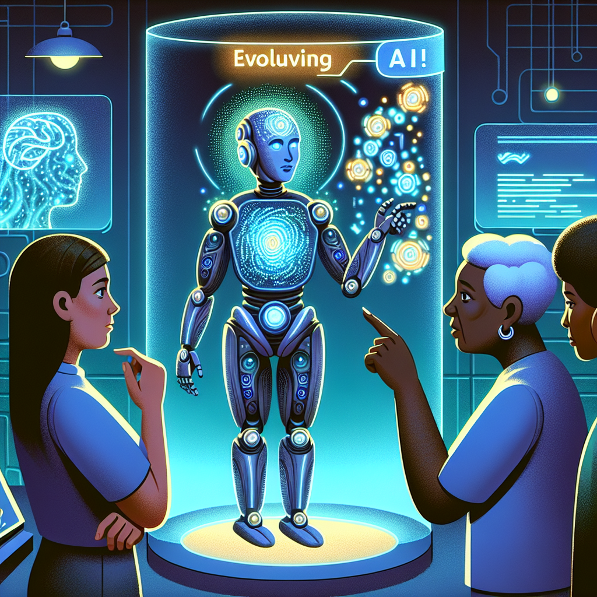
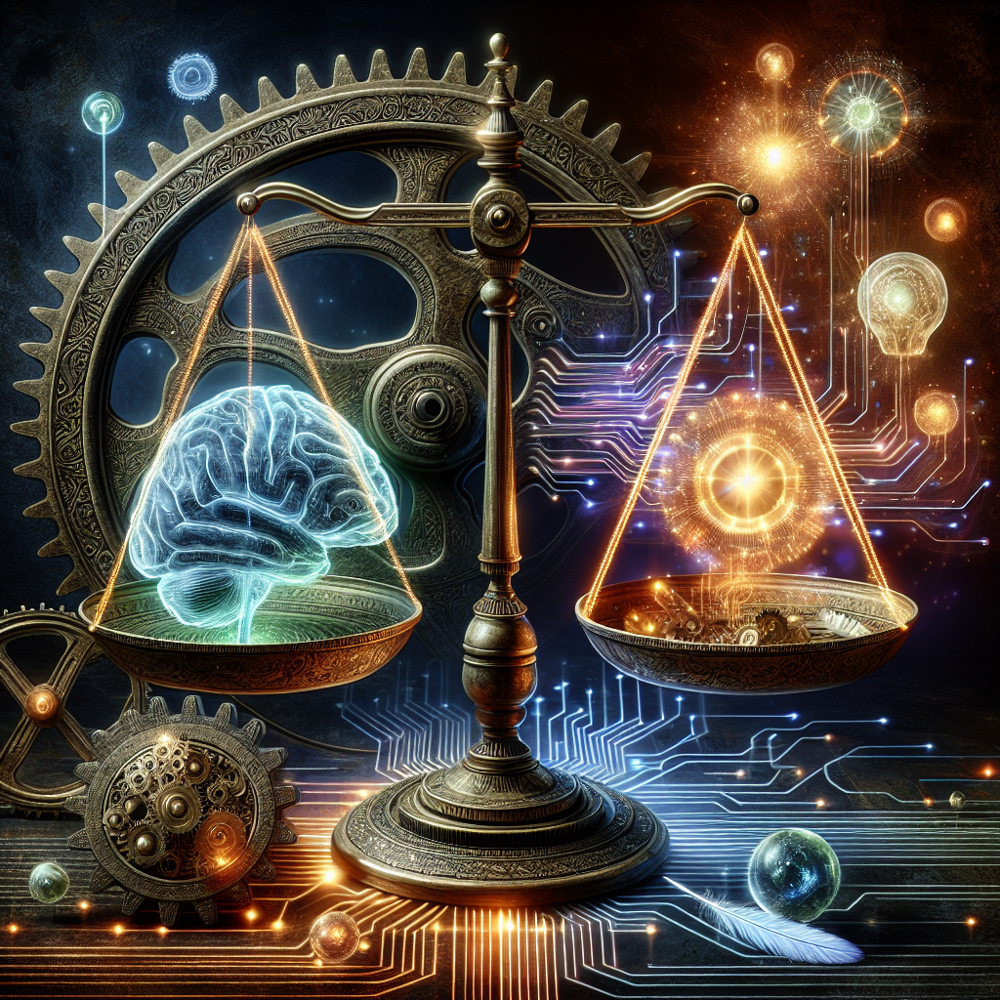
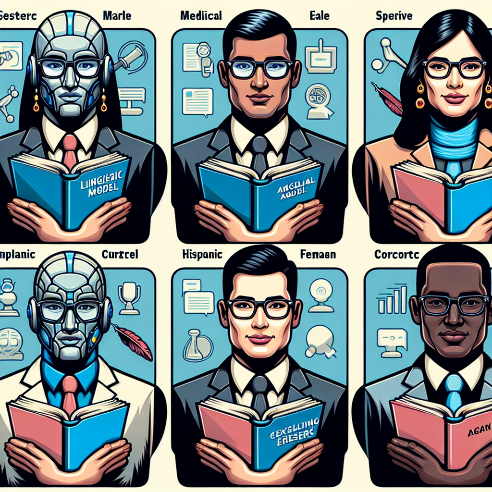
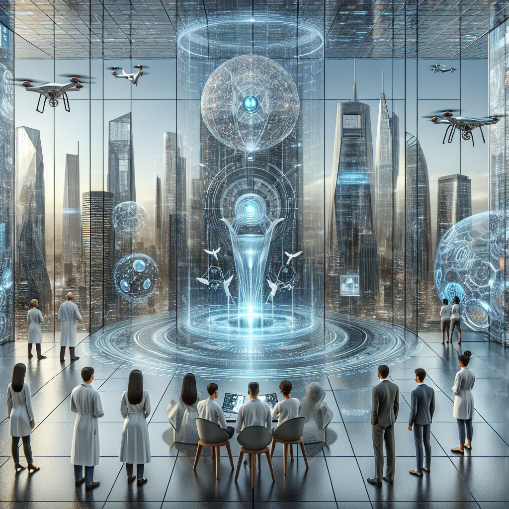

Large Language Models and Agents
This lecture explores the fascinating world of large language models (LLMs) and their applications as agents in various domains. We'll delve into the architecture, capabilities, and ethical considerations surrounding these powerful AI systems.
Introduction to Large Language Models
| Definition and overview of Large Language Models (LLMs).Historical context and evolution of LLMs.Key components and architecture of LLMs.Examples of LLMs: GPT-3, BERT, and T5. |
Capabilities of Large Language Models
|  | Understanding natural language and generating human-like text.Applications in translation, summarization, and content creation.LLMs in conversational agents and customer service.Limitations and challenges of current LLMs. |
Ethical Considerations
|  | Bias and fairness in language models.Privacy concerns with training data and generated content.Misuse of LLMs in generating misleading information.Strategies for mitigating ethical risks. |
LLMs as Agents
|  | Defining agents in the context of AI and LLMs.Use cases of LLMs as agents in various industries.Integrating LLMs with other AI technologies for enhanced capabilities.Future prospects of autonomous LLM agents. |
Conclusion and Future Directions
|  | Summary of key points discussed in the lecture.The ongoing development and potential of LLMs.Emerging trends and research areas in LLMs and AI agents.The role of interdisciplinary collaboration in advancing LLM technology. |